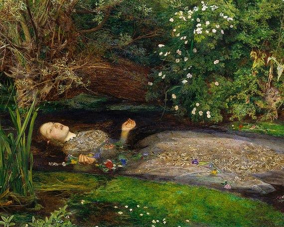

O pâle Ophélia ! belle comme la neige
Oui tu mourus, enfant, par un fleuve emporté!
ყოველთვის მინდოდა ფრანგულის სწავლა,მაგრამ თავი ვერაფრით მოვაბი. ყოველთვის როდესაც “ლა ფოლიეს” ვუსმენდი ვბრაზდებოდი, რადგან სიტყვები არ მესმოდა, შესაბამისად,მის ამბავსაც ვერ ვიგებდი, მე კი კარგ სიმღერად მხოლოდ ის მიმაჩნია რომელიც კარგ ამბავს ყვება.
არ ვიცი ჩემი სიმღერა როგორ მოგეწონებათ, შეიძლება უკვე მოგწყინდათ კიდეც, მაგრამ სიმღერების შუა გზაში მიტოვება არ შეიძლება.
ყველაფერი მაშინ დაიწყო, ან უფრო მართებული იქნება ითქვას ყველაფერი მაშნ გადაწყდა,რადგან ეს გარკვეულ დროში განვითარებული პროცესი არ ყოფილა, ეს მოვლენა იყო, რომლის დროის მარწუხებში მოქცევაც შეუძლებელია. მოკლედ, ყველაფერი მაშინ გადაწყდა, როდესაც ის ოპერის წინ დავინახე, ძალიან ნაცნობი სახე იყო, ადრეც მყავდა ნანახი, ან უნივერსიტეტში ან მსგავს ადგილას, მაგრამ სხვა ადამიანების გარეშე პირველად დავინახე და ყურადღებაც პირველად მივაქციე. თავიდან მხოლოდ მისი სილამაზე მიფორიაქებდა სხეულს, მაგრამ შემდეგ მასზე შორიდან დაკვირვება დავიწყე. ბავშვობაში პატარა სია მქონდა იმ ქალებისა რომელთა ცოლად შერთვაზეც ვოცნებობდი, ხოდა მანაც ამ ქალების სახით დაიწყო ჩემს სიზმრებში სტუმრობა. თავდაპირველად ის ალკესტე იყო, დუმდა და თითს ჩემკენ იშვერდა, შემდეგ ანტიგონეს, პენელოპეს და მედეას როლებიც მოირგო, ბოლოს კი ოფელიასავით თმაგაჩეჩილი დარბოდა და უხამს სიტყვებს ხმამაღლა წარმოთქვამდა. ახლა მისი დანახვა შეშლილ პრინცად მაქცევდა.
ცოტა ხნის შემდეგ ახლო მეგობრებადაც კი ვიქეცით, ძალიან საინტერესო საუბრები გვქონდა, თითქმის ყველაფერზე შეიძლებოდა გველაპარაკა, სილამაზეს და ესთეთიკას ძალიან აფასებდა, რის გამოც კიდევ უფრო მომწონდა. ისიც გამიმხილა,რომ მისი საყვარელი წიგნი “იდიოტი” იყო. მართალია, როგოჟინი ყოველთვის მომწონდა, მაგრამ მაინც გამიკვირდა, არ მეგონა ასეთ ბავშვური თუ იქნებოდა. ჩემი ნახატებიც ძალიან მოსწონდა, მაგრამ შვილების მკვლელ ბოროტ ქალში, ხმალზე აგებულ დიდოში და სხვა ანტიკურ სახეებში საკუთარი თავი ვერ ამოიცნო, ალბათ ამისთვის ძალიან მახინჯები ეჩვენებოდნენ. ხო, მე მხატვარი ვარ, მაგრამ მაშინ დახელოვნებული მაინც არ მეთქმოდა. მუსიკაშიც ერთნაირი გემოვნება აღმოგვაჩნდა, ხან ბახს ვუსმენდით, ხანაც გოლდბერგის ვარიაციებს, მათი მუსიკა უნივერსალურია, მას ამბის მოსაყოლად ენა და სიტყვები არ სჭრდება, თანაც თითოეულ მსმენელს საკუთარი ამბავი აქვს, არ ვიცი რომელი იყო, მაგრამ მე სამზარეულოში მოფუსფუსე ჰანიბალს ვხედავდი, აღფღტოვანებული ვიყავი იმით, თუ როგორ ურთიერთობდა ხორცთან, ჰანიბალი ყოველთვის მიქელანჯელოზე დიდ ხელოვნად მიმაჩნდა.
ერთხელ კლუბშიც ვიყავით, ალბათ ფსიქოდელიური გამოცდილების მისაღებად, მაგრამ თავი ძალიან არაკომფორტულად იგრძნო. პირველად სწორედ მაშინ მაკოცა. ვგრძნობდი ჩემი ძალიან ეშინოდა, მაგრამ, ასევე, ძალიან მოვწონდი. მთელი ეს დრო ვლაპარაკობდით, ფილმებს ვუყურებდით და მუსიკას ვუსმენდით. ყველაფერი ძალიან ახარებდა. განსაკუთრებით ბედნიერი მაშინ იყო, როდესაც გავჩუმდებოდით და თავს მის კალთაზე დავდებდი. ცოლობაც მალევე ვთხოვე, არც მის მშობლებს ვიცნობდი და არც მეგობრებს, მაგრამ ყველაფერი ძალიან მალე მოგვარდა.მას ლამაზი ქორწილი უნდოდა, ამიტომ შევთავაზე ის აჭარაში, ჩემს ბავშვობის დროინდელ სახლში გადაგვეხადა, სახლი ერთ პატარა სოფელში დგას, ზღვასთან ახლოს, იქვე ხევია და მთის მდინარეც ჩამოედინება. ჯვარი ძველ ეკლესიაში დავიწერეთ, სუფრაზეც(თუ შეიძლება ამას სუფრა ეწოდოს) ფაქტობრივად არ დავრჩენილვართ და მალევე სახლში წავედით, სახლი სოფლის ბოლოში დგას. ტრიერის “ანტიქრისტე” ნანახი გაქვთ? დაახლოებით ისეთი გარემოა, ოღონდ ბნელი ძალები ჯერ არ ბინადრობენ. სახლში რომ შევედით ვნება მომეკიდა, ის ლოგინზე წამოჯდა, მე სასტუმრო ოთახში გავედი, როცა იქიდან დავბრუნდი ტანსაცმელს იხდიდა, მე გავაჩერე და ვთხოვე არ გაეხადა. ძალიან ლამაზი იყო ძველებურ საქორწინო კაბაში, მაგრამ ეს ხომ ესკიზი იყო, ნამდვილი შედევრი ჯერ არ მქონდა შესრულებული. ხელი წელზე შემოვხვიე, უკან ფრთხილად გადავაწვინე და ვაკოცე, მერე მთელი სახე და კისერი დავუკოცნე, სასტუმრო ოთახიდან აღებული წვრილი დანა ავიღე და მკერდში ჩავარტყი, მინდოდა პირდაპირ გულში მომერტყა, როგორც მის საყვარელ წიგნშია, მინდოდა ყველაფერი ნაზად გამეგრძელებინა რათა არ სტკენოდა, რენესანსის მხატვრების მიერ გვამების მოტაცებაზე და მათზე პრაქტიკის ჩატარებაზე მსმენოდა, ამიტომ უნივერსიტეტის ყალბ საშვს ვიყენებდი და მორგში ცხედრებზე ვსინჯავდი დარტყმის წერტილს, მაგრამ მაინც არ გამომივიდა, ყვირილი დაიწყო, თავზე ხელი ფრთხილად მოვკიდე და ყელი გამოვჭერი, ტკივილი დიდხანს არ გაგრძელებულა, მალე დამშვიდდა, ყველაფერი სისხლში იყო ამოსვრილი, ამიტომ კაბა გავხადე და როგორც შემეძლო გავწმინდე, შემდეგ მისი სხეული დავბანე, ჯერ კიდევ არ იყო გაფერმკრთალებული.
ისევ ჩავაცვი, მისი თაიგულიც ავიღე და ხევში გავედი, იქ მდინარეზე ერთი საოცარი ადგილია, ჩანჩქერი ჩამოდის და გუბდება, ბავშვობაში ამ დაგუბებულში ხშრად შევდიოდი და წყალში ხელებგაშლილი ვწვებოდი, თითქოს ვინათლებოდი. მისი სხეული ფრთხილად შევაცურე და მეც თან შევყევი, მთვარე ძალიან მკვეთრად ანათებდა მის ფერმკრთალ ცხედარს და მეც ვხვდებოდი, რომ ხელოვნებისა და სიყვარულის ამ უმაღლესი და ესთეტიკური აქტით ღმერთიც ტკბებოდა. მისმა სხეულმა მდინარეში მოცურავე ხავსებთან ერთად შეცურა, ულამაზესი საქორწინო კაბით და თაიგულით ხელში ოფელიას ძალიან ემსგავსებოდა, თუმცა დარწმუნებული ვარ მასზე ბევრად ლამაზი იყო. ასეთი ამღელვებელი მომენტი ცხოვრებაში არასოდეს მქონია. თავს შამანივით ვგრძნობდი, ვიცოდი რომ მისი სხეული უსასრულო ზღვაში შეცურავდა. ძველი ინდიელებივით სულთა სამყაროსკენ მივაცილებდი და ვგრძნობდი რომ ეს აღარასოდეს განმეორდებოდა, რადგან აღარავინ შემიყვარდებოდა ასე ძლიერად.
დეკემბერი, 2018
გამოცემა N1
ავტორი: ხვლიკების მეფე